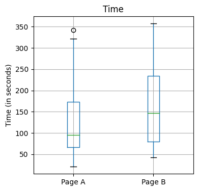
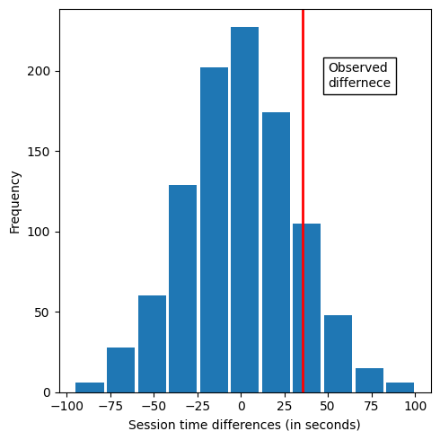

파이썬 통계 01 : 순열 검정
.
선생님 : https://partrita.github.io/posts/StatTest/
.
.
1. A/B 검정
페이지A와 B에서의 체류 시간
import pandas as pd
session_times = pd.read_excel('web_page_data.xlsx', sheet_name='Sheet1')
session_times
| Page | Time | |
|---|---|---|
| 0 | Page A | 0.21 |
| 1 | Page B | 2.53 |
| 2 | Page A | 0.35 |
| 3 | Page B | 0.71 |
| 4 | Page A | 0.67 |
| 5 | Page B | 0.85 |
| 6 | Page A | 2.11 |
| 7 | Page B | 2.46 |
| 8 | Page A | 1.32 |
| 9 | Page B | 1.49 |
| 10 | Page A | 0.68 |
| 11 | Page B | 0.75 |
| 12 | Page A | 3.21 |
| 13 | Page B | 3.33 |
| 14 | Page A | 1.47 |
| 15 | Page B | 1.87 |
| 16 | Page A | 0.95 |
| 17 | Page B | 1.26 |
| 18 | Page A | 0.45 |
| 19 | Page B | 0.48 |
| 20 | Page A | 1.18 |
| 21 | Page B | 1.47 |
| 22 | Page A | 3.42 |
| 23 | Page B | 3.57 |
| 24 | Page A | 1.97 |
| 25 | Page B | 2.23 |
| 26 | Page A | 0.39 |
| 27 | Page B | 0.43 |
| 28 | Page A | 0.65 |
| 29 | Page B | 0.87 |
| 30 | Page A | 1.73 |
| 31 | Page A | 0.74 |
| 32 | Page A | 0.86 |
| 33 | Page A | 1.18 |
| 34 | Page A | 2.06 |
| 35 | Page A | 0.93 |
session_times.Time = 100 * session_times.Time
session_times
| Page | Time | |
|---|---|---|
| 0 | Page A | 21.0 |
| 1 | Page B | 253.0 |
| 2 | Page A | 35.0 |
| 3 | Page B | 71.0 |
| 4 | Page A | 67.0 |
| 5 | Page B | 85.0 |
| 6 | Page A | 211.0 |
| 7 | Page B | 246.0 |
| 8 | Page A | 132.0 |
| 9 | Page B | 149.0 |
| 10 | Page A | 68.0 |
| 11 | Page B | 75.0 |
| 12 | Page A | 321.0 |
| 13 | Page B | 333.0 |
| 14 | Page A | 147.0 |
| 15 | Page B | 187.0 |
| 16 | Page A | 95.0 |
| 17 | Page B | 126.0 |
| 18 | Page A | 45.0 |
| 19 | Page B | 48.0 |
| 20 | Page A | 118.0 |
| 21 | Page B | 147.0 |
| 22 | Page A | 342.0 |
| 23 | Page B | 357.0 |
| 24 | Page A | 197.0 |
| 25 | Page B | 223.0 |
| 26 | Page A | 39.0 |
| 27 | Page B | 43.0 |
| 28 | Page A | 65.0 |
| 29 | Page B | 87.0 |
| 30 | Page A | 173.0 |
| 31 | Page A | 74.0 |
| 32 | Page A | 86.0 |
| 33 | Page A | 118.0 |
| 34 | Page A | 206.0 |
| 35 | Page A | 93.0 |
import matplotlib.pylab as plt
ax = session_times.boxplot(by='Page', column='Time',
figsize=(4,4))
ax.set_xlabel('')
ax.set_ylabel('Time (in seconds)')
plt.suptitle('')
plt.tight_layout()
plt.show()

mean_A = session_times[session_times.Page=='Page A'].Time.mean()
mean_B = session_times[session_times.Page=='Page B'].Time.mean()
print(mean_B-mean_A)
35.66666666666667
1.1 순열 검정을 통한 A/B 검정
순열검정(permutaion test): 두 개 이상의 표본을 함께 결합하여 관측값들을 무작위로 재표본으로 추출하는 과정
import random
def perm_func(x, nA, nB):
n = nA + nB
idx_B = set(random.sample(range(n), nB))
idx_A = set(range(n)) - idx_B
return x.loc[list(idx_B)].mean() - x.loc[list(idx_A)].mean()
nA = session_times[session_times.Page == 'Page A'].shape[0] ## Page A인 개수
nB = session_times[session_times.Page == 'Page B'].shape[0] ## Page B인 개수
print(perm_func(session_times.Time, nA, nB))
40.00952380952381
## 천번 돌렸을 때 페이지 A와 B에서 머무르는 시간 차이에 대한 도수 분포표
random.seed(1)
perm_diffs = [perm_func(session_times.Time, nA, nB) for i in range(1000)]
fig, ax = plt.subplots(figsize=(5,5))
ax.hist(perm_diffs, bins =11, rwidth=0.9)
ax.axvline(x= (mean_B-mean_A), color='red', lw=2)
ax.text(50,190,'Observed\ndiffernece', bbox={'facecolor':'white'})
ax.set_xlabel('Session time differences (in seconds)')
ax.set_ylabel('Frequency')
plt.tight_layout()
plt.show()
## 붉은 선은 관측된 차이

import numpy as np
print(np.mean(perm_diffs > mean_B-mean_A))
## 12% 확률로 발생하는
0.121
1.1.2 t-Test를 사용한 A/B 검정
from scipy import stats
res = stats.ttest_ind(session_times[session_times.Page == 'Page A'].Time,
session_times[session_times.Page == 'Page B'].Time,
equal_var=False)
print(f'p-value for single sided test: {res.pvalue / 2:.4f}')
p-value for single sided test: 0.1408
import statsmodels.api as sm
tstat, pvalue, df = sm.stats.ttest_ind(
session_times[session_times.Page == 'Page A'].Time,
session_times[session_times.Page == 'Page B'].Time,
usevar='unequal', alternative='smaller')
print(f'p-value: {pvalue:.4f}')
p-value: 0.1408